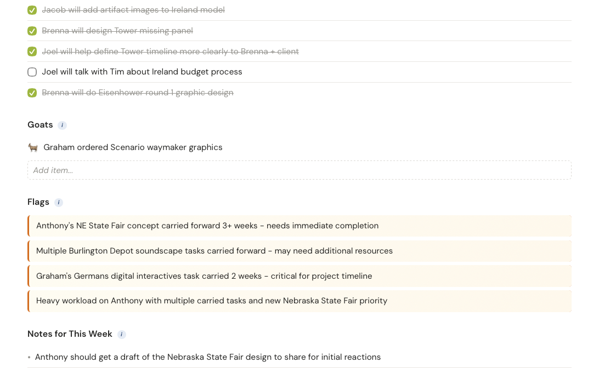
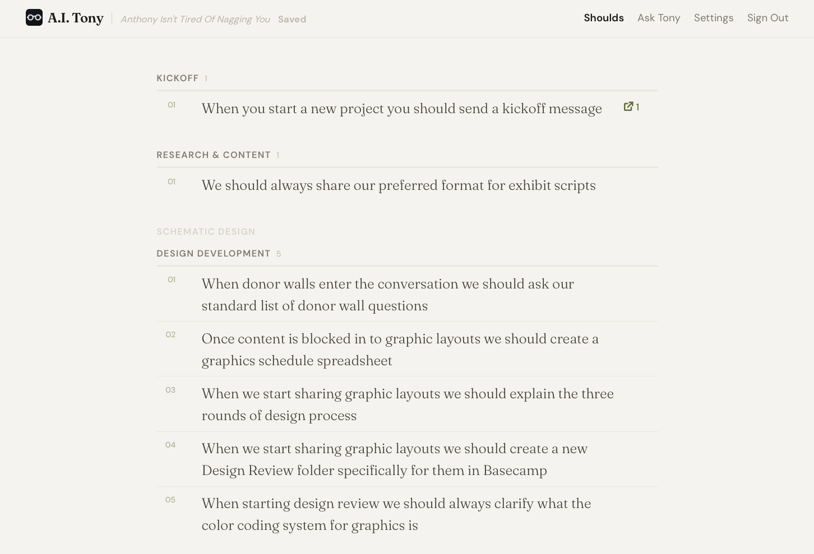
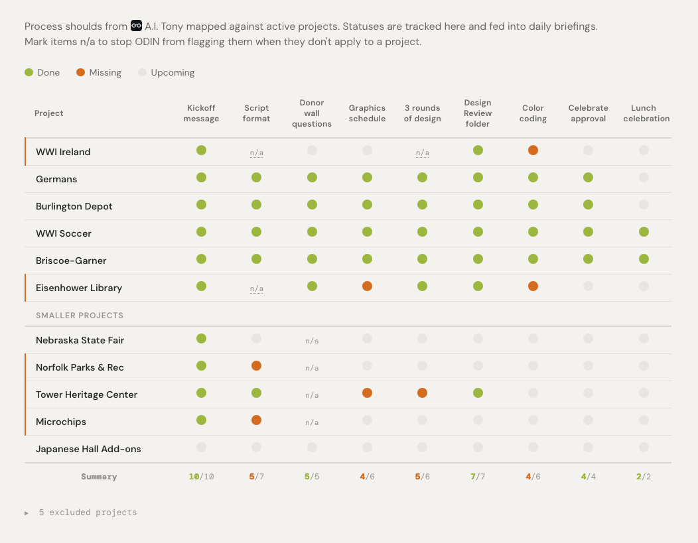
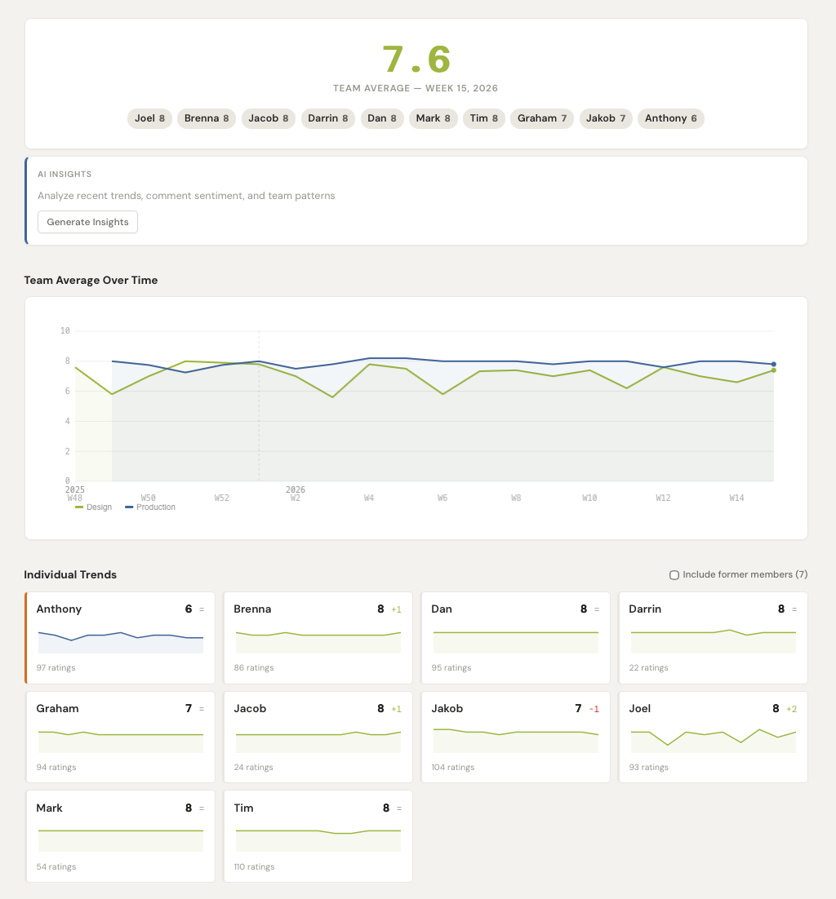
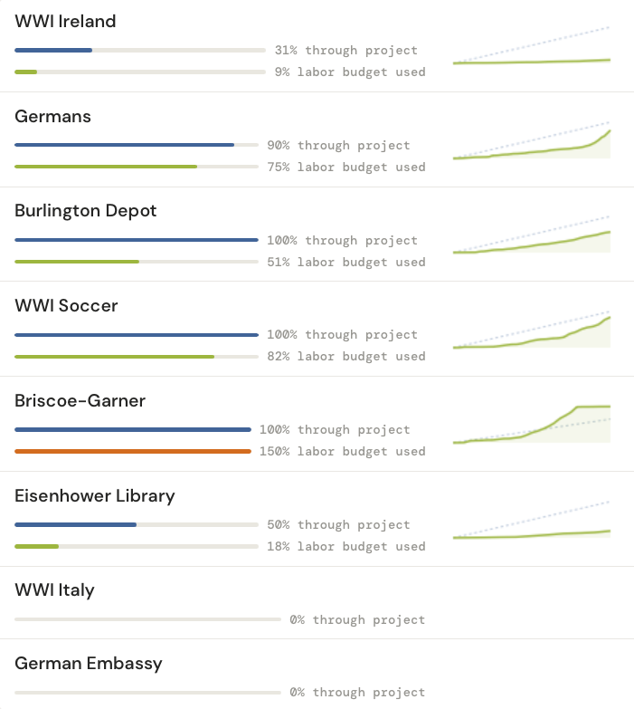
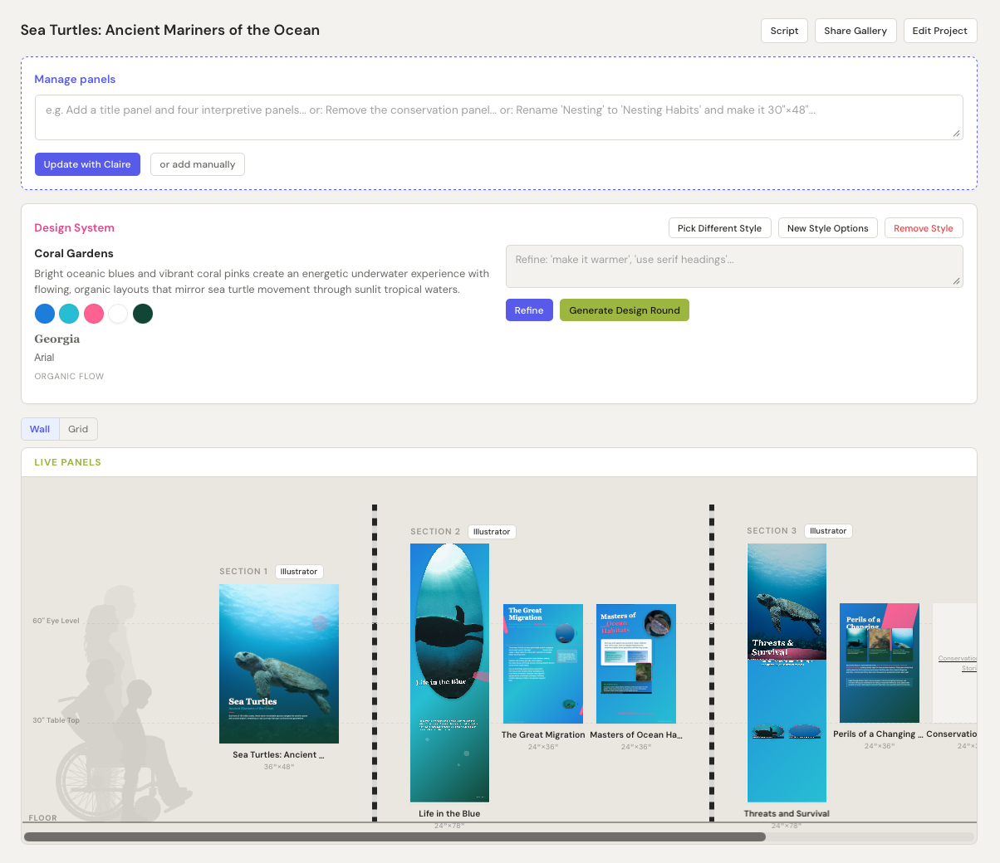

ODIN
The brain. Pulls from every app,
merges the data, draws conclusions.
What ODIN knows
Projects
Schedules & phases
Budget & burn rates
Hours logged (Toggl)
Basecamp tasks & activity
Design sub-phases
Budget & burn rates
Hours logged (Toggl)
Basecamp tasks & activity
Design sub-phases
Team
Workload per person
Meeting morale ratings
Carried tasks & overload
Who's in, who's out
Tenure & roster
Meeting morale ratings
Carried tasks & overload
Who's in, who's out
Tenure & roster
Pipeline
Active inquiries
Potential projects
Pending product orders
Lead time calculations
Cash flow projections
Potential projects
Pending product orders
Lead time calculations
Cash flow projections
Process
Tony's process rules
Compliance per project
Audit trail of changes
Phase-aware tracking
Compliance per project
Audit trail of changes
Phase-aware tracking
Communication
Basecamp messages
Schedule entries
Meeting agendas (history)
AI chat conversations
Schedule entries
Meeting agendas (history)
AI chat conversations
Intelligence
Daily briefings
Coaching insights
Draft vs. edit learnings
Knowledge library
Coaching insights
Draft vs. edit learnings
Knowledge library
2-Month
Significantly
overbooked.
More work than
the team can absorb.
6-Month
Sharp drop,
then imbalance.
Fab recovers faster
than design.
12-Month
Cash flow
goes negative.
Unless pipeline
deals close.

AI-Generated Meeting Agendas
A.I. Tony
The process rules engine.
Knows what should happen and when.
A.I. Tony
ODIN


Tony holds the rules. ODIN checks them against every project and surfaces what's missing in the daily briefing.
Agreements
AI-drafted contracts.
Digital signatures. PDF delivery.
Claire
AI design assistant.
Content, layout, typography, color.
But it doesn't always go to plan...
Quotes generates a complete proposal from a sentence. The AI is accurate. But the team still reviews every line item.
The technology leapt ahead —
the trust didn't.
Stage 1 — Descriptive
The software shows you what happened. You interpret it.
Stage 2 — Predictive
The AI reads across systems and tells you what's about to happen.

Team Health

Burn Rates
Already using this with the National Archives...

Stage 3
Generative.
The AI does the work. Claire designs panels. Quotes builds budgets. Agreements drafts contracts.
The human reviews and refines. The blank page is gone.